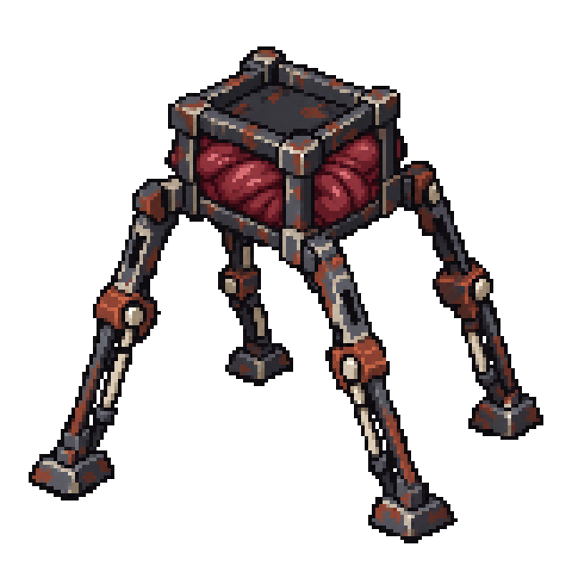
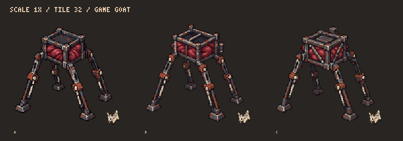

А — Угловая клетка

PNG 160 × 160 · ИсходникТри исправленных варианта: верхняя рамка, углы, стойки и ноги полностью железные. Мясо выпирает между стойками через боковые проёмы. Все варианты на четырёх длинных разнесённых ногах.
Тайл 32 px, козёл из текущего игрового атласа. Прозрачный кадр 160 × 160; силуэт до 144 px. Это статические арт-варианты, вариант для игры ещё не выбран.
